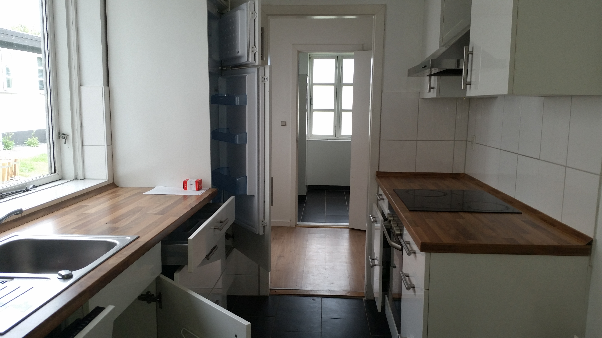

Flensburg, Großestraße 12
Grossestrasse 12, ist eine Immobilie in der Fussgängerzone von Flensburg. Das Haus wurde im Jahr 1900 gebaut und enthält im Erdgeschoss eine spannede Gewerbefläche, zur Zeit gibt es dort ein Klamottenladen (CUBE). Früher war in diesem Haus auch einmal ein Kino untergebracht. Ausserdem gibt es 6 Wohnungen welche alle eine unterschiedliche Größe haben. Die oberste Wohnung hat eine große Dachterrasse mit Aussicht über die Fussgängerzone. Alle Wohnungen sind renoviert, und mit einer Einbauküche ausgestattet. Die Immobilie liegt in der unmittelbare Nähe vom Parkhaus in Speicherlinie. Mit einer Wohnung in der der Großenstraße befinden Sie sich immer in der Nähe von Einkaufmöglichkeiten und vom Zob.


| Objektart | Wohnung 3. Etage |
| Adresse | Großestraße 12 |
| Wohn- und Nutzflächen | 150qm |
| Nebenflächen | Nein |
| Baujahr | 1900 renoviert 2013 |
| Heizung | Fernwärmezentralheizung |
| Besichtigung | Auf Anfrage |
| Verfügbar ab | Auf Anfrage |
| Kaltmiete | 980 EUR |
| Nebenkosten ab | 230 EUR |
| Gesamtmiete | 1210 EUR |
Nyborg, Bøjdenvej 67
In der Immobilie Bøjdenvej in Dänemark, Nyborg gibt es 17 Wohnungen in unterschiedlichen Größen. Die Immobilien sind historisch als Molkerei gebaut worden. Anfang 1960 ist die Molkerei geschlossenen worden und wurde zu insgesamt 18 Wohnungen umgebaut. In 2008-09 wurde die Molkerei mehrere male Zwangsversteigert, Januar 2009 hat dann die Foenixgruppe die Immobilie gekauft. Damals war die Immobilie in einem sehr schlechten Zustand, und eine Vollrenoveierung war nötig. Zwei Wohnungen wurden dabei zusammengelegt und nach 9 Monaten Renovierung haben wir 17 Wohnungen, alle mit neue Küche und Bäder. Die Immobilien liegt in einer sehr tollen Lage. Im Moment sind alle Wohnungen vermietet, aber Interessenten können gerne eine Email zuschicken, oder das Kontaktformular benutzen um uns Wünsche über Größen und Preise zukommen zu lassen. Dann melden wir uns gerne zurück.


- 
| Objektart | Wohnung 3. Etage |
| Adresse | Großestraße 12 |
| Wohn- und Nutzflächen | 150qm |
| Nebenflächen | Nein |
| Baujahr | 1900 renoviert 2013 |
| Heizung | Fernwärmezentralheizung |
| Besichtigung | Auf Anfrage |
| Verfügbar ab | Auf Anfrage |
| Kaltmiete | 980 EUR |
| Nebenkosten ab | 230 EUR |
| Gesamtmiete | 1210 EUR |
Orbaek, Hovedgaden 3
Diese Immobilie liegt in der Mitte von Fünen, in herrlich zentraler Lage im beschaulichen Ort Örbak. Es stehen zwei Gewerbeflächen zur Verfügung, wobei eine davon als Grillbar eingerichtet ist. Im ersten Geschoss liegen zwei sehr schön renovierte Wohnungen. In unmittelbarer Nähe liegen ein Netto und eine Tankstelle. Diese Immobilie liegt zentral an einer Hauptstraße. Aufgrund einiger, bisher noch fehlender Informationen bitten wir Sie, sich bei Interesse über unser Kontaktformular oder per E-Mail zu melden.


| Objektart | Wohnung 1. Etage |
| Adresse | Orbaek, Hovedgaden 3 |
| Wohn- und Nutzflächen | 98qm |
| Nebenflächen | Stellplatz, Balkon |
| Baujahr | |
| Heizung | Gaszentralheizung |
| Besichtigung | Auf Anfrage |
| Verfügbar ab | Auf Anfrage |
| Kaltmiete | 3900kr inkl. Wasser |
| Nebenkosten ab | 700kr |
| Gesamtmiete | 4600kr |